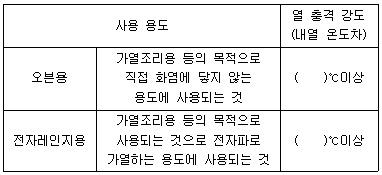
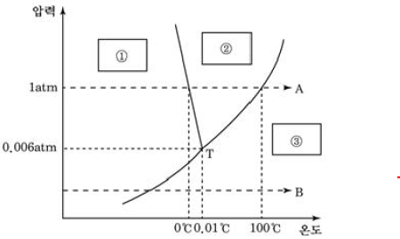
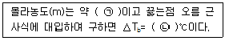
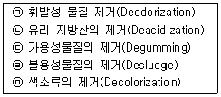
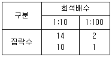

식품기사 (2020-09-26 기출문제)
1과목: 식품위생학
1. 식품용 기구 및 용기·포장 공전에 의하여 유리제 중 가열조리용 기구의 사용용도 및 열 충격 강도(내열 온도차)에 대한 아래 표에서 ( )안에 알맞은 기준 온도를 순서대로 나열한 것은?

- 120, 120
- 240, 120
- 240, 240
- 150, 150
(정답률: 61%)

2. 수분 함량이 적거나 당도가 높은 전분질식품을 주로 변패시키는 미생물은?
- 효모
- 곰팡이
- 바이러스
- 세균
(정답률: 79%)
3. 건강기능식품의 기준 및 규격에서 제품의 형태에 관한 정의로 틀린 것은?
- 정제란 일정한 형상으로 압축된 것을 말한다.
- 환이란 구상으로 만든 것을 말한다.
- 편상이란 얇고 편편한 조각상태의 것을 말한다.
- 분말이란 입자의 크기가 과립제품보다 큰 것을 말한다.
(정답률: 88%)
4. 감미료와 거리가 먼 식품첨가물은?
- 스테비오사이드(Stevioside)
- 아스파탐(Aspartame)
- 아디픽산(Adipic acid)
- D-솔비톨(Sorbitol)
(정답률: 76%)
5. 생성량이 비교적 많고 반감기가 길어 식품에 특히 문제가 되는 핵종만으로 된 것은?
- 131I, 137Cs
- 131I, 32P
- 129Te, 90Sr
- 137Cs, 90Sr
(정답률: 81%)
6. 식품 내에 존재하는 미생물에 대한 설명으로 틀린 것은?
- 곰팡이는 일반적으로 세균보다 나중에 번식한다.
- 수분활성도가 높은 식품에는 세균이 잘 번식한다.
- 수분활성도 0.8 이하의 식품에서는 거의 모든 미생물의 생육이 저지된다.
- 당을 함유하는 산성식품에는 유산균이 잘 번식한다.
(정답률: 83%)
7. 식품공장에서 미생물 수의 감소 및 오염물질 제거 목적으로 사용하는 위생처리제가 아닌 것은?
- Hypochlorite
- Chlorine dioxide
- Ethanol
- EDTA
(정답률: 79%)
8. 부적당한 캔을 사용할 때 다음 통조림 식품 중 주석의 용출로 내용 식품을 오염시킬 우려가 가장 큰 것은?
- 어육
- 식육
- 산성과즙
- 연유
(정답률: 86%)
9. 잔류성 및 체내 축적성이 크게 문제가 되는 농약과 가장 거리가 먼 것은?
- 유기인제
- 유기납제
- 유기염소제
- 유기수은제
(정답률: 70%)
10. 식품공장의 작업장 구조와 설비에 대한 설명으로 틀린 것은?
- 출입문은 완전히 밀착되어 구멍이 없어야하고 밖으로 뚫린 구멍은 방충망을 설치한다.
- 천장은 응축수가 맺히지 않도록 재질과 구조에 유의한다.
- 가공장 바로 옆에 나무를 많이 식재하여 직사광선으로부터 공장을 보호하여야 한다.
- 바닥은 물이 고이지 않도록 경사를 둔다.
(정답률: 92%)
11. 미량으로 발암이나 만성중독을 유발시키는 화학물질 중 상수원 물의 오염이 문제가 되는 것은?
- 아질산염(N-nitrosoamine)
- 메틸알코올(Methyl alcohol)
- 트리할로메탄(Trihalomethane, THM)
- 이환방향족아민류(Heterocyclic amines)
(정답률: 84%)
12. 파상열에 대한 설명으로 틀린 것은?
- 건조 시 저항력이 강하다.
- 특이한 발열이 주기적으로 반복된다.
- Brucella속이 원인균이다.
- 원인균은 열에 대한 저항성이 강하다.
(정답률: 74%)
13. 실험동물에 대한 최소 치사량을 나타내는 용어는?
- MLD
- LC50
- ADI
- MNEL
(정답률: 68%)
14. 식품의 관능개선을 위한 식품첨가물과 거리가 먼 것은?
- 착향료
- 산미료
- 유화제
- 감미료
(정답률: 85%)
15. 곰팡이 대사산물로 온혈동물에 해독을 주는 물질군을 총칭한 것은?
- Antibiotics
- Inhibitor
- Mycotoxicosis
- Mycotoxin
(정답률: 71%)
16. 베네루핀(Venerupin)에 대한 중독 증상 설명으로 틀린 것은?
- 모시조개, 바지락이 주요 원인식품이다.
- 대단히 급격하게 증상이 나타나 식후 30분이면 심한 복통이 나타난다.
- 열에 안정하여 pH 5~8에서 100℃, 1분간 가열해도 파괴되지 않는다.
- 주로 3~4월경에 발생한다.
(정답률: 56%)
17. 다음 중 채소류를 매개로 하여 감염될 수 있는 가능성이 가장 낮은 기생충은?
- 동양모양선충
- 구충
- 선모충
- 편충
(정답률: 76%)
18. 식품의 원재료에는 존재하지 않으나 가공처리공정 중 유입 또는 생성되는 위해인자와 거리가 먼 것은?
- 트리코테신(Trichothecene)
- 다핵방향족 탄화수소(Polynuclear aromatic hydrocarbons, PAHs)
- 아크릴아마이드(Acylamide)
- 모노클로로프로판디올(Monochloropropandiol, MCPD)
(정답률: 68%)
19. 안식향산이 식품첨가물로 광범위하게 사용되는 이유는?
- 물에 용해되기 쉽고 각종 금속과 반응하지 않기 때문이다.
- 값이 싸고 방부력이 뛰어나며 독성이 낮기 때문이다.
- pH에 따라 향균효과가 달라지지 않아 산성식품뿐만 아니라 알칼리식품까지도 사용할 수 있기 때문이다.
- 비이온성물질이 많은 식품에서도 향균작용이 뛰어나고 비이온성계면활성제와 함께 사용하면 상승효과가 나타나기 때문이다.
(정답률: 79%)
20. 경구감염병의 특징과 거리가 먼 것은?
- 병원균의 독력이 강하다.
- 잠복기가 비교적 길다.
- 2차 감염이 거의 발생하지 않는다.
- 집단적으로 발생한다.
(정답률: 85%)
2과목: 식품화학
21. 다음 중 질소환산계수가 가장 큰 식품은?
- 쌀
- 팥
- 대두
- 밀
(정답률: 75%)
22. 새우, 게의 갑각은 청록색이지만 조리할 대 삶거나 초절임을 하면 적색이 된다. 이 적색 색소는?
- Capsotubin
- Canthaxanthin
- Astacin
- Physalien
(정답률: 68%)
23. 냄새 성분과 함유식품의 연결이 틀린 것은?
- 메틸메르캅탄(Methyl mercaptan) - 함황화합물류 – 파, 마늘
- 에틸아세테이트(Ethyl acetate) - 케톤류 - 파인애플
- 리나오올(Linalool) - 알코올류 - 복숭아
- 헥센알(Hexenal) - 알데히드류 – 찻잎
(정답률: 56%)
24. 돼지고기 2g을 Kjeldahl법으로 분석하였더니 질소함량이 60mg이었다. 돼지고기의 조단백질 함량은 약 몇 %인가?
- 17.2
- 18.8
- 20.0
- 21.4
(정답률: 64%)
25. 다음 중 발효시켜서 얻는 제품이 아닌 것은?
- 케파(Kefir)
- 쿠미스(Kumiss)
- 요구르트
- 전지분유
(정답률: 81%)
26. pH 4.6에서 침전되는 우유 단백질은?
- 락토글로불린
- 혈청알부민
- 면역글로불린
- β-카제인
(정답률: 77%)
27. 환원성 당류로 단맛을 내는 저칼로리 감미료로 이용되는 물질은?
- 배당체(Glycoside)
- 전분(Starch)
- 당알코올(Sugar alcohol)
- 글리코겐(Glycogen)
(정답률: 82%)
28. 결핵환자들의 경우 결핵균이 활동하지 못하도록 균을 석회화시키는데 이런 경우 유용할 것으로 예상되는 비타민은?
- 비타민 C
- 비타민 D
- 비타민 E
- 비타민 K
(정답률: 52%)
29. 콜로이드(Colloid)입자가 가지는 성질이 아닌 것은?
- 반투성
- 흡착
- 브라운(Brown) 운동
- 삼투압
(정답률: 69%)
30. 일정한 전단속도일 때 시간이 경과함에 따라 외관상 점도가 증가하는 유체는?
- Dilatant 유체
- Pseudopkastic 유체
- Thixotropic 유체
- Rheopectic 유체
(정답률: 53%)
31. 트랜스지방 및 트랜스지방 저감화 방법에 대한 설명 중 옳지 않은 것은?
- 트랜스지방은 수소첨가에 의해 불포화도를 낮추는 경화공정 중 발생가능하다.
- 천연에서도 낙농유제품 등에서 트랜스지방은 소량 발생한다.
- 중성지질의 위치를 변화시키는 Interesterification 공법에 의해 트랜스지방이 없는 유지 생산이 가능하다.
- 효소적 Interesterification은 Lipase를 이용하여 주로 중성지질의 1,2번 위치의 지방산을 변화시키는 공정이다.
(정답률: 55%)
32. 35%의 HCI을 희석하여 10% HCI 500mL를 제조하고자 할 때 필요한 증류수의 양은 약 얼마인가?
- 143mL
- 234mL
- 187mL
- 357mL
(정답률: 59%)
33. 관능검사에서 차이식별검사(종합적 차이검사)에 해당하지 않는 것은?
- 삼점검사
- 일-이점검사
- 단순차이검사
- 기호도검사
(정답률: 76%)
34. 다음 당류 중 이눌린(Inulin)의 주요 구성단위는?
- 포도당(Glucose)
- 만노오스(Mannose)
- 갈락토오스(Galactose)
- 과당(Fructose)
(정답률: 70%)
35. 효소적 갈변 반응과 거리가 먼 것은?
- 멜라노이딘(Melanoidin)을 형성함
- Polyphenol oxidase, Tyrosinase 등이 관계함
- 주로 과일이나 채소 등의 식품에 절단된 부위에서 일어남
- 구리이온은 갈변효소 작용을 활성화함
(정답률: 66%)
36. 감자칩이나 마요네즈와 같이 지방이 함유되거나 갈변화가 예상되는 식품에서 지방산패나 갈변화 반응을 억제할 목적으로 효소를 이용한다면 어떤 종류의 효소를 사용하는 것이 적합한가?
- Polyphenol oxidase, Peroxidase
- Glucose oxidase, Catalase
- Naringinase, Tyrosinase
- Papain, Lipoxygenase
(정답률: 55%)
37. 어떤 식용유지의 산패속도의 온도계수(Temperature coefficient)Q10=2일 때 30℃에 저장되었던 것을 –20℃에서 저장하면 그 산패 속도는 얼마나 줄어들게 되는가?
- 1/12
- 1/32
- 1/50
- 1/64
(정답률: 65%)
38. 단백질의 열변성에 대한 설명 중 틀린 것은?
- 단백질 중에서 알부민과 글로불린이 가장 열변성이 쉽게 일어난다.
- 단백질에 수분이 많으면 비교적 낮은 온도에서 일어난다.
- 단백질은 일반적으로 등전점에서 가장 열변성이 일어나기 어렵다.
- 단백질은 전해질이 있으면 변성온도가 낮아진다.
(정답률: 61%)
39. 물의 상태도 그래프에서 ①, ②, ③ 각각에 들어갈 물질을 순서대로 나열한 것은?

- 얼음, 물, 수증기
- 얼음, 물, 물
- 수증기, 물, 물
- 얼음, 수증기, 물
(정답률: 84%)
40. 점탄성을 나타내는 식품과 거리가 먼 것은?
- 마가린
- 육류
- 펙틴 젤
- 가소성 고체 지방질
(정답률: 73%)
3과목: 식품가공학
41. 식품의 냉동 저장 중 일어나는 변화로서 냉동해(Freezer burn)와 거리가 먼 것은?
- 산화방지
- 미세한 구멍 생성
- 풍미저하
- 단백질의 탈수변성
(정답률: 77%)
42. 용매추출법에 의한 착유 시 추출에 가장 많이 사용되는 용매는?
- 아세톤(acetone)
- 헥산(hexane)
- 벤젠(benzene)
- 에테르(ether)
(정답률: 57%)
43. 20wt% 설탕 용액의 끓는점을 구하는 과정에 따라, ㉠과 ㉡에 들어갈 내용이 모두 옳은 것은? (단, 설탕의 분자식은 C12H22O11, 용액의 끓는점 오름 근사식 △Tb=0.51m, m은 몰랄농도이다.)

- ㉠ 0.01 ㉡ 0.0⑤1
- ㉠ 0.03 ㉡ 0.0153
- ㉠ 0.73 ㉡ 0.3723
- ㉠ 2.92 ㉡ 1.4892
(정답률: 44%)
44. 통조림에서 탁옴이 나는 원인이 아닌 것은?
- 탈기 불충분
- 관 내부 가스발생
- 내용물의 연화
- 기온, 기압의 변화
(정답률: 65%)
45. 삼투압 원리가 적용된 것으로 보기 어려운 식품은?
- 자반고등어
- 젓갈류
- 오이피클
- 황태
(정답률: 84%)
46. 식육의 화학적 조성에 대한 설명이 틀린 것은?
- 식육의 화학적 조성은 동물의 종류, 성별, 연령, 영양 상태에 따라 차이가 크며, 동물 부위에 따라서도 차이가 크다.
- 근형질 단백질은 증류수 또는 낮은 이온강도(0.03)의 염용액으로 추출되기 때문에 수용성 단백질이라고도 한다.
- 근원섬유 단백질은 Actin-Myosin-ATP 복합체 형성에 직·간접적인 조절기능을 가지고 있다.
- 식육에는 비타민 A, D등의 지용성 비타민은 극히 소량이 들어있고, 돼지고기에는 수용성 비타민 중 특히 비타민 C가 많이 함유되어 있다.
(정답률: 79%)
47. 달걀의 저장 중에 일어나는 현상이 아닌 것은?
- 알 껍질이 반들반들해진다.
- 흰자의 점성이 줄어든다.
- 기실이 커진다.
- 호흡작용으로 인해 산성으로 된다.
(정답률: 72%)
48. 분지올리고당(Branched oligosaccharide)의 특성으로 틀린 것은?
- 감미도가 설탕보다 높다.
- 흡습성이 매우 크므로 타 당류의 결정화를 방지하는 효과가 있다.
- 식품가공 중에 미생물의 발육을 억제하는 효과가 크다.
- 미생물에 의해 분해되기 어려워 글루칸이 형성되지 않으므로 충치 발생을 억제한다.
(정답률: 48%)
49. 식초 제조에 관여하는 반응은?

- ㉤→㉣→㉠→㉢→㉡
- ㉡→㉢→㉤→㉣→㉠
- ㉢→㉣→㉠→㉤→㉡
- ㉣→㉢→㉡→㉤→㉠
(정답률: 55%)
50. 동결에 대한 설명 중 틀린 것은?
- 분무식 동결법은 급속동결에 해당한다.
- 송풍동결법은 –40~-30℃의 냉풍을 강제순환시키는 급속동결이다.
- -40~-30℃로 냉각시킨 금속판 사이에 식품을 넣고 양면을 밀착하여 동결시키는 것은 금속판 접촉 동결법이다.
- 최대 빙결정 생성대를 통과하는 시간이 40분 이상이면 급속동결에 해당한다.
(정답률: 75%)
51. 수분함량에 따른 치즈의 경도별 구분과 종류의 연결이 틀린 것은?
- 연질치즈 – 까망베르(Camembert)
- 반경질(반연질)치즈 – 블루(Blue)
- 경질치즈 – 파르메산(Parmesan)
- 고경질치즈 – 로마노(Romano)
(정답률: 54%)
52. 식품을 동결할 때 최대빙결정생성대의 일반적인 온도 범위는?
- 0 ~ 5℃
- -5 ~ -1℃
- -10 ~ -6℃
- -15 ~ -11℃
(정답률: 61%)
53. 감의 떫은 맛을 없애는 공정의 원리는?
- Shibuol을 용출 제거한다.
- Shibuol을 불용성 물질로 변화시킨다.
- Shibuol을 당분으로 전환시킨다.
- Shibuol을 지방산으로 전환시킨다.
(정답률: 74%)
54. 코지(Koji)를 만들면 주로 생성되는 전분과 단백질 분해효소는?
- 아밀라아제(Amylase)와 카탈라아제(Catalase)
- 펙티나아제(Pectinase)와 셀룰라아제(Cellulase)
- 아밀라아제(Amylase)와 프로테아제(Protease)
- 프로테아제(Protease)와 펙티나아제(Pectinase)
(정답률: 75%)
55. 두부를 제조할 때 두유의 단백질 농도가 낮을 경우 나타나는 현상과 거리가 먼 것은?
- 두부의 색이 어두워진다.
- 두부가 딱딱해진다.
- 가열 변성이 빠르다.
- 응고제와의 반응이 빠르다.
(정답률: 51%)
56. 난백을 이용한 가공품 제조 시 1000g의 난백이 필요하다면 껍질을 포함한 60g의 전란이 몇 개 필요한가?
- 약 16개
- 약 20개
- 약 24개
- 약 28개
(정답률: 49%)
57. 42% 전분유 1L를 산분해시켜 DE 값이 42가 되는 물엿을 만들었을 때 생성된 환원당의 양은?
- 120.0g
- 176.4g
- 100.8g
- 84.0g
(정답률: 49%)
58. 과즙의 청징, 착즙의 수율향상 및 과즙의 농축을 쉽게 하기 위하여 이용되는 효소는?
- Peptide hydrolase
- Pectinase
- Catalase
- Peroxidase
(정답률: 75%)
59. 버터 제조 시 필요한 공정이 아닌 것은?
- 75℃에서 살균하고 5~6시간 발효시킨다.
- 교반으로 지방의 알맹이를 응집시킨다.
- 순도가 높은 소금 약 2.5%를 가하여 풍미를 향상시킨다.
- 방사선으로 다시 오염균을 살균한다.
(정답률: 76%)
60. 두부 응고제 중 황산칼슘(CsSO4·2H2O)과 관련된 제조적 특징이 아닌 것은?
- 반응이 완만하여 사용이 편리하다.
- 수율이 좋다.
- 두부 표면이 매끄럽다.
- 두부 색깔이 좋다.
(정답률: 60%)
4과목: 식품미생물학
61. 노로바이러스에 대한 틀린 설명은?
- 구토, 복통을 유발한다.
- 식중독 증상이 심하고 발병 시 대부분은 치명적인 경우가 많다.
- 오염된 지하수, 물로부터 감염될 수 있다.
- 학교 급식에서 식중독이 발생한 사례가 있다.
(정답률: 73%)
62. 미생물의 내열성을 높이는 요인들에 대한 설명으로 옳은 것은?
- 대수기의 세포가 정체기의 세포보다 열 저항성이 작다.
- 생육온도가 높을수록 열 저항성이 작다.
- 최적 pH에서 열 저항성이 작다.
- 건조로 수분활성도가 낮아지면 열 저항성이 낮아진다.
(정답률: 40%)
63. 미생물의 수를 직접적으로 측정하는 데 이용되는 것은?
- Haematometer
- Test tube
- Dry oven
- Water bath
(정답률: 77%)
64. 일반세균수(표준평판법) 측정에 의해 1mL 중의 세균수 CFU/mL를 구한 결과로 옳은 것은?(오류 신고가 접수된 문제입니다. 반드시 정답과 해설을 확인하시기 바랍니다.)

- 143mL
- 234mL
- 187mL
- 357mL
(정답률: 39%)
65. 높은 식염농도에서도 생육하는 내염성 효모는?
- Zygosaccharomyces rouxii
- Saccharomyces pasteurianus
- Saccharomyces carlsbergensis
- Candida utilis
(정답률: 63%)
66. 청주, 장류 등의 양조에 쓰이며 황록색이나 황갈색의 균총을 형성하는 균은?
- Mucor pusillus
- Aspergillus oryzae
- Monascus anka
- Rhizopus delemar
(정답률: 80%)
67. 식품공장의 파아지(Phage) 대책으로 적합하지 않은 것은?
- 공장주변을 청결하게 한다.
- 식품공장의 공기 및 설비를 수시로 검사한다.
- 생산효율이 가장 좋은 균주 1종을 꾸준히 사용한다.
- 용기의 살균처리를 철저히 한다.
(정답률: 85%)
68. 고압 증기 멸균(Autoclave)의 일반적인 조건은?
- 135℃, 2초간
- 121℃, 15분간
- 100℃, 60분간
- 63℃, 120분간
(정답률: 76%)
69. 하면발효 효모에 대한 설명 중 틀린 것은?
- 난형 또는 타원형이다.
- 발효작용이 상면발효 효모보다 빠르다.
- 라피노오스(Raffinose)를 발효시킬 수 있다.
- 발효 최적온도는 5~10℃ 정도이다.
(정답률: 75%)
70. 다음 중 감별배지에 해당되는 것은?
- Citric acid 첨가 배지
- Metabisulpite 첨가 배지
- Bile salt 첨가 배지
- Eosin methylene blue 첨가 배지
(정답률: 61%)
71. 사람과 동물의 장에서 발견되며, 특히 모유로 자라는 유아의 주된 장내 미생물로 잘 알려져 있다. 편성혐기성으로 당을 발효하여 젖산과 아세트산을 생성하는 균은?
- Bifidobacterium속
- Propionibacterium속
- Brevibacterium속
- Lactobacillus속
(정답률: 55%)
72. 다음 미생물 중에서 비타민 생산균이 아닌 것은?
- Eremothecium ashbyii
- Streptomyces griseus
- Streptomyces olivaceus
- Penicillum citrinum
(정답률: 69%)
73. 미생물 중 세포 내의 염색체 수가 한 개이고, 세포 분열은 비유사 분열법에 따르는 것은?
- 조류(Algae)
- 곰팡이(Mold)
- 효모(Yeast)
- 세균(Bacteria)
(정답률: 53%)
74. 다음 균주 중 분생포자(Condia)를 만드는 것은?
- Penicillium nonatum
- Mucor mucedo
- Torulaspora fermentati
- Thamnidium elegans
(정답률: 39%)
75. 부패된 통조림에서 균을 분리하여 시험을 실시하였더니 유당(Lactose)을 발효하였다. 어떤 균인가?
- Proteus morganii
- Salmonella typhosa
- Pseudomonas fluorescens
- Escherichia coli
(정답률: 64%)
76. 다음 중 세균 세포에 가장 많이 들어 있는 성분은?
- 다당류
- 단백질
- 지질
- DNA
(정답률: 63%)
77. 꿀이나 잼, 당밀, 초콜릿 제품 등의 일반적인 변패요인에 해당되지 않은 미생물은?
- Zygosaccharomyces속
- Hansenula속
- Salmonella속
- Aspergillus속
(정답률: 47%)
78. 세균의 증식 방법은?
- 영양세포의 출아법으로 증식한다.
- 포자낭 포자를 형성하여 증식한다.
- 접합포자를 형성하면서 증식한다.
- 분열법으로 증식하고 내생포자를 형성하는 경우도 있다.
(정답률: 73%)
79. 포자를 형성하지 않는 효모는?
- Saccharomyces속
- Hansenula속
- Debaryomyces속
- Candida속
(정답률: 45%)
80. 불완전균류에 속하는 것은?
- Pichia속
- Hansenula속
- Rhodotorula속
- Candida속
(정답률: 44%)
5과목: 생화학 및 발효학
81. DNA 분자의 Purine 과 Pyrimidine 염기쌍 사이를 연결하는 결합은?
- 공유결합
- 수소결합
- 이온결합
- 인산결합
(정답률: 76%)
82. 핵단백질의 가수분해 순서의 나열로 옳은 것은?
- 핵단백질-뉴클레오티드-핵산-뉴클레오시드-당
- 핵단백질-핵산-뉴클레오티드-뉴클레오시드-당
- 핵단백질-당-뉴클레오시드-뉴클레오티드-핵산
- 핵단백질-뉴클레오시드-핵산-뉴클레오티드-당
(정답률: 68%)
83. 식품 중의 병원성 인자 및 병원 미생물을 검출할 때 RNA를 이용해서 검출하는 방법은?
- ELISA method
- RT-PCR method
- Southern blot
- Western blot
(정답률: 80%)
84. 간에서 포도당이 글리코겐으로 변환되는 과정에 참여하는 물질은?
- Uridine triphosphate
- Cytidine triphosphate
- Guanosie
- Adenosine triphosphate
(정답률: 49%)
85. Sucrose가 가수분해될 때 생성되는 단당류는?
- 포도당과 포도당
- 과당과 과당
- 포도당과 과당
- 포도당과 갈락토오스
(정답률: 79%)
86. 고등동물의 간에서 Glucose의 합성에 주로 이용되는 전구체가 아닌 것은?
- Pyruvate
- Lactate
- Citrate
- Glycerol
(정답률: 31%)
87. DNA의 재조합 과정을 위해 사용되는 제한효소(Restriction enzyme)인 Endonuclease가 아닌 것은?
- Eco Rl
- Hin dll
- Hin dlll
- Sal PIV
(정답률: 69%)
88. EDTA(Ethylene Diamine Tetra Acetic acid)처리가 효소의 활성에 영향을 미치는 이유는?
- EDTA가 효소 Peptide의 결합을 분해시키기 때문
- EDTA가 효소 단백질의 2차 구조를 변화시키기 때문
- EDTA가 효소 단백질의 1차 구조를 변화시키기 때문
- EDTA가 활성부위의 금속이온과 결합하기 때문
(정답률: 69%)
89. 항산화작용을 하여 산소로부터 세포막을 보호하는 비타민은?
- 비타민 A
- 비타민 B
- 비타민 D
- 비타민 E
(정답률: 78%)
90. A효소의 촉매작용에 필수적인 아미노산 잔기는 활성자리(Active site)에 존재하는 글루탐산(pKR=5.0)과 라이신(pKR=10.0)이고 이 효소의 최적 활성을 나타내는 pH가 7.5였다면 이 때 글루탐산과 라이신의 곁사슬(R)에 존재하는 카르복실기와 아미노기의 이온형이 바르게 짝지어진 것은?
- 글루탐산 : -COOH, 라이신 : -NH2
- 글루탐산 : -COO-, 라이신 : -NH3+
- 글루탐산 : -COOH, 라이신 : -NH3+
- 글루탐산 : -COO-, 라이신 : -NH2
(정답률: 51%)
91. 단백질 합성을 저해하는 항생물질을 대수증식기에 처리할 때 나타나는 현상으로 옳은 것은?
- RNA, DNA 단백질 합성은 모두 정지된다.
- RNA, DNA 단백질 합성은 모두 증진된다.
- 단백질 합성은 계속되나 RNA와 DNA의 합성은 정지된다.
- RNA와 DNA의 합성은 계속되나 단백질 합성은 정지된다.
(정답률: 60%)
92. 내열성 α-amylase 생산에 이용되는 균은?
- Aspergillus niger
- Bacillus licheniformis
- Rhizopus oryzae
- Trichoderma reesei
(정답률: 39%)
93. 조류는 퓨린을 어떻게 대사하여 배설하는가?
- 퓨린을 배설하지 않고 다른 화합물로 모두 전환하여 재이용한다.
- 소변으로 배설하지 않고 퓨린을 요산으로 분해하여 대변과 함께 배설한다.
- 요소로 전환하여 아주 소량씩 소변으로 배설한다.
- 퓨린 대사 능력이 없어 그대로 대변으로 배설한다.
(정답률: 72%)
94. α-glucosidase 의 특징이 아닌 것은?
- 거의 모든 생물에 존재하며, 특히 효모에 풍부하게 존재한다.
- 말토오스, 아밀로오스, 올리고당을 분해한다.
- 이소말토오스에 대해서 활성이 뛰어나다.
- 말타아제라고도 한다.
(정답률: 48%)
95. 전분질 원료에서의 주정 제조 과정은?
- 증자→당화→발효→증류
- 당화→증자→발효→증류
- 당화→증자→증류→발효
- 증자→당화→증류→발효
(정답률: 52%)
96. 전자전달계에 대한 설명으로 틀린 것은?
- NADH dehydrogenase에 의해 NADH로부터 2개의 전자를 수용하여 FMN에 전자를 전달함으로서 개시된다.
- Flavoprotein(FeS)은 전자를 수용하여 Fe3+를 Fe2+로 환원시킨다.
- 전자전달의 결과 ADP와 Pi로부터 총 5개의 ATP가 합성된다.
- 최종 전자수용체인 산소는 물로 환원된다.
(정답률: 63%)
97. 연속배양의 일반적인 장점이 아닌 것은?
- 장치 용량을 축소할 수 있다.
- 작업 시간을 단축할 수 있다.
- 생산성이 증가한다.
- 배양액 중 생산물의 농도가 훨씬 높다.
(정답률: 70%)
98. 글리신(Glycine) 수용액의 HCI과 NaOH 수용액으로 적정하게 얻은 적정곡선에서 pK1=2.4, pK2=9.6일 때 등전점은/
- pH 3.6
- pH 6.0
- pH 7.2
- pH 12.6
(정답률: 66%)
99. 간에서 프로트롬빈을 비롯한 여러 가지 혈액 응고인자를 합성하고 정상수준을 유지하기 위해 필요한 비타민은?
- 비타민 A
- 비타민 D
- 비타민 E
- 비타민 K
(정답률: 80%)
100. 케톤체에 대한 설명으로 옳은 것은?
- 간은 케톤체 분해 기능이 강하다.
- 케톤체는 근육에서 생성되어 간에서 산화된다.
- 과잉의 탄수화물은 케톤체로 전환되어 축적된다.
- 케톤체는 간에서 생성되어 뇌와 심장, 뼈대근육, 콩팥 등의 말초조직에서 산화된다.
(정답률: 66%)
여기서 ( ) 안에 들어가는 것은 열 충격 강도(내열 온도차)에 대한 기준 온도입니다. 즉, 이 기준 온도 이상에서는 해당 유리제로 만든 가열조리용 기구를 사용할 수 있습니다.
따라서 정답인 "120, 120"은 가열조리용 기구의 사용용도와 열 충격 강도(내열 온도차)에 대한 기준 온도가 모두 120℃ 이상이라는 뜻입니다.
다른 보기들은 각각 열 충격 강도(내열 온도차)에 대한 기준 온도가 다르기 때문에 해당 기준 온도 이상에서만 사용할 수 있는 가열조리용 기구가 있고, 그렇지 않은 기구가 있습니다.